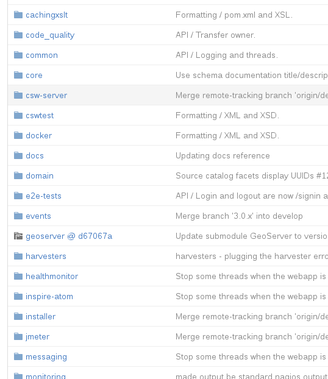

Разделите свой код¶
GeoNetwork is built using Maven. This means, there are several folders inside the source code and each of them is a different Maven project that can be built separately.
Создайте свой собственный проект¶
Лучший способ работать с GeoNetwork и легко обновлять его позже — это добавить свой собственный проект (проекты) Maven в стек сборки Maven, чтобы код GeoNetwork оставался неизменным, а ваши изменения не были связаны.
Для этого перейдите в корневую папку исходного кода и создайте новую папку. Это можно сделать на терминале GNU/Linux с помощью следующей команды:
cd core-geonetwork mkdir custom
Затем мы должны сказать Maven, что это новый проект, который можно построить. Поэтому мы добавляем новый файл с именем pom.xml в эту «пользовательскую» папку и добавляем следующее:
<project xmlns="http://maven.apache.org/POM/4.0.0"
xmlns:xsi="http://www.w3.org/2001/XMLSchema-instance"
xsi:schemaLocation="http://maven.apache.org/POM/4.0.0 http://maven.apache.org/maven-v4_0_0.xsd">
<modelVersion>4.0.0</modelVersion>
<parent>
<groupId>org.geonetwork-opensource</groupId>
<artifactId>geonetwork</artifactId>
<version>3.1.0-SNAPSHOT</version>
</parent>
<groupId>org.geonetwork-opensource</groupId>
<artifactId>custom</artifactId>
<packaging>jar</packaging>
<name>Hook your customizations tutorial</name>
<description/>
<licenses>
<license>
<name>General Public License (GPL)</name>
<url>http://www.gnu.org/licenses/old-licenses/gpl-2.0.txt</url>
<distribution>repo</distribution>
</license>
</licenses>
<properties>
<geonetwork.build.dir>${project.build.directory}/${project.build.finalName}</geonetwork.build.dir>
<closure.compile.level/>
</properties>
<profiles>
<profile>
<id>tests-and-static-analysis</id>
<activation>
<property><name>!skipTests</name></property>
</activation>
</profile>
</profiles>
</project>
Добавьте свой проект¶
Then you should add it to the list of projects Maven will automatically build. On the root folder of the source code, edit the file pom.xml and add your own project:
<modules>
<module>schemas-test</module>
<module>web-ui</module>
<module>custom</module>
<module>web-ui-docs</module>
<module>web-client</module>
<module>web</module>
</modules>
Идея состоит в том, что мы не только собираем проект, но и добавляем его в генерируемый war-файл. Для этого редактируем файл web/pom.xml и добавляем наш проект в качестве новой зависимости внутри тега dependencies:
<dependency>
<groupId>${project.groupId}</groupId>
<artifactId>custom</artifactId>
<version>${project.version}</version>
</dependency>
И в том же файле мы также должны добавить нашу папку ресурсов в сборку (если мы собираемся изменить пользовательский интерфейс, что мы и сделаем в этом руководстве):
<resource>
<directory>${project.basedir}/../custom/src/main/resources</directory>
</resource>
<resourcesAsCSV>
${project.basedir}/src/main/webapp,
${rootProjectDir}/web-ui/src/main/resources/,
${rootProjectDir}/custom/src/main/resources/,
${build.webapp.resources}
</resourcesAsCSV>
Теперь, если мы построим GeoNetwork, он также построит и добавит наш проект.